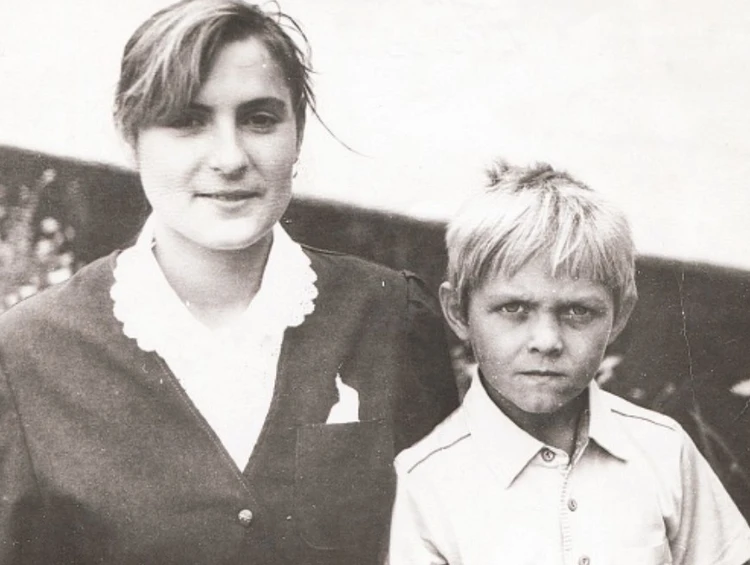

ЖИТТЄПИС
Батьки родом з півночі України. Мати народилася в Чернігівській області (село Риботин Коропського району), працювала на будівництві. Батько родом із Сумщини, військовий, воював в Афганістані. З дитинства Олександр відвідував школу сімферопольського футбольного клубу «Таврія», але футбольна кар'єра Олександра не склалася. У 15 років почав займатися боксом.
Хоча батьки Усика були нерелігійними, у віці 10 років прийшов до православ'я під впливом бабусі.
Закінчив школу № 34 в Сімферополі (тут навчався разом зі своєю майбутньою дружиною Катериною) та Львівський університет фізичної культури (потім — аспірант цього вишу).
ПРОФЕСІЙНА КАР'ЄРА
9 листопада 2013 року відбувся дебютний поєдинок Усика, у якому він нокаутував чотириразового чемпіона Мексики Феліпе Ромеро. У 1-му раунді Усик упевнено пару раз перевірив суперника, добре влучивши йому в голову. 2-й раунд знову пройшов за переваги українського боксера. У 5-му раунді все закінчилося — після чіткого удару зліва в щелепу тренер мексиканця викинув рушник. 14 грудня 2013 року Усик провів поєдинок із колумбійцем Епіфаніо Мендосою. До цього поєдинку на рахунку Мендози було 34 перемоги й одна нічия в 50 поєдинках (у тому числі 30 — нокаутом). Утім, досвід Мендози не допоміг йому вистояти в бою з Олександром Усиком. Український боксер у другій і третій трихвилинці відправляв Мендосу в нокдаун. А в 4-му раунді після серії успішних ударів Усика рефері бою зупинив поєдинок.
Третій бій Олександр провів 26 квітня 2014 року за межами України у Німеччині в андеркарті бою Володимира Кличка з Алексом Леапаї, Усик нокаутував у 3-му раунді німця ганського походження Бена Нсафоа. Суперник Олександра Усика протримався всього два повних раунди. У 3-му раунді Олександр Усик спочатку відправив опонента в нокдаун, а потім точним ударом у щелепу вклав Бена на настил. У четвертому бою, який пройшов в Одесі 31 травня 2014 року, Олександр нокаутував дворазового чемпіона Аргентини Сезара Девіда Кренса. У 3-му раунді Усик відправив Кренса в нокдаун. Поєдинок завершився в 4-му раунді перемогою українського боксера.
Реакція на російське вторгнення в Україну
У перший день вторгнення Росії в Україну Олександр Усик перебував у Великій Британії, обговорючи деталі реваншу з Ентоні Джошуа, але після початку бойових дій одразу повернувся в Україну. Боксер закликав до припинення бойових дій та вступив до лав територіальної оборони, висловивши готовність захищати країну зі зброєю в руках. 8 березня дружина Олександра повідомила про обстріл кадирівцями їхнього будинку, який знаходиться у селищі Ворзель під Києвом.
25 березня Олександр у своєму профілі в Instagram повідомив про рішення провести реванш проти Ентоні Джошуа. Це рішення мотивував тим, що принесе більше користі для своєї країни спортивними перемогами. 27 березня Катерина Усик повідомила, що росіяни захопили їхній будинок, а на території стоять танки та БТРи.